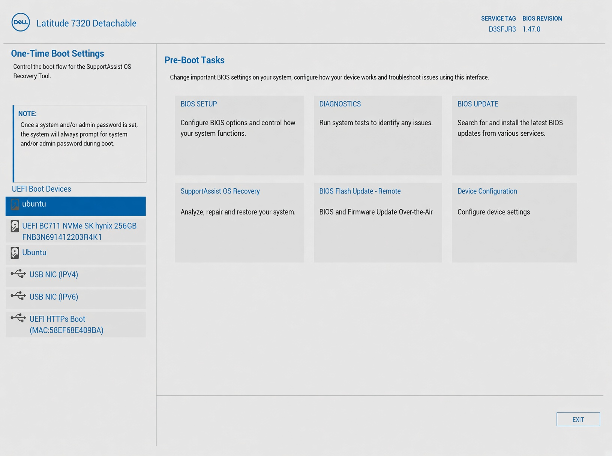
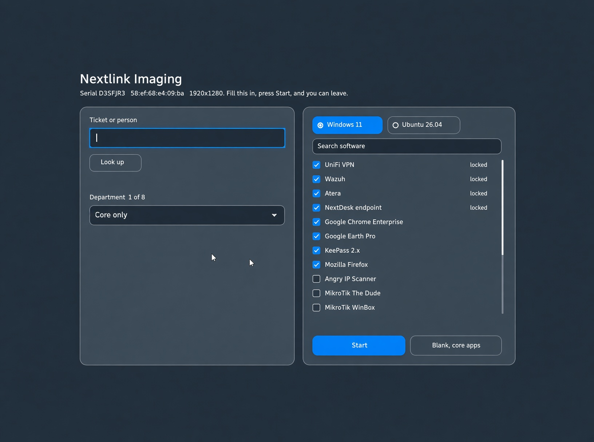
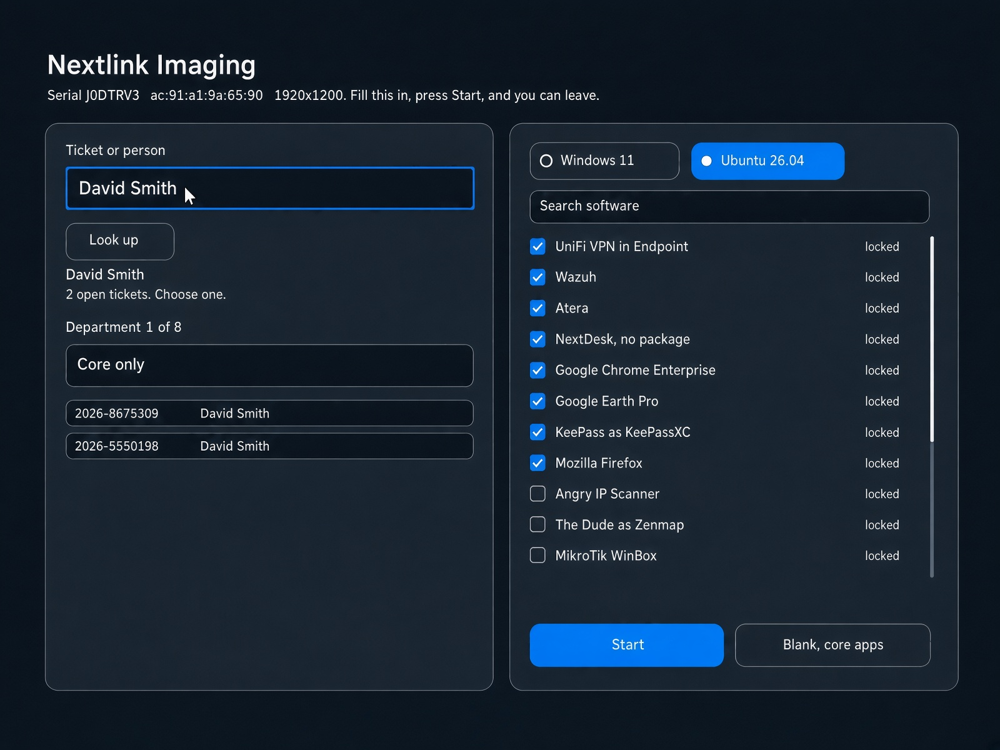
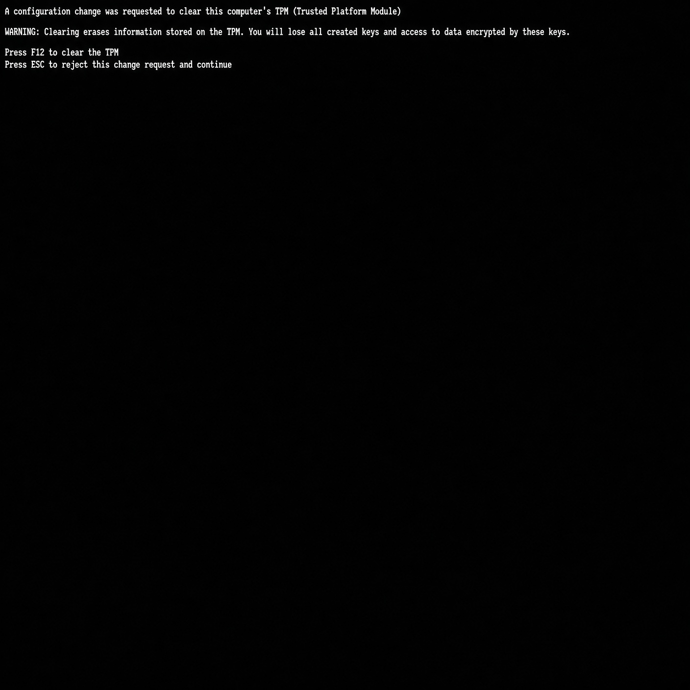

Imaging a laptop
Network-boot the laptop, look up the person, press Start, and leave it on the imaging cable. Windows 11 and Ubuntu 26.04 both image with Secure Boot on. The NextDesk ticket tells you when the laptop is ready.
1. Before you start
- The laptop is on the imaging network (the dock or USB-C adapter on the imaging cable). Power stays on. The cable stays in until the laptop restarts to the sign-in screen.
- You have a NextDesk ticket number or the employee’s name. A laptop with no person yet uses Blank, core apps (no ticket, so no ticket notes).
Open BIOS Setup (Dell F2, Lenovo F1) and confirm:
| Setting | Windows | Ubuntu |
|---|---|---|
| Secure Boot | On (an old BIOS may need it off, see Models) | On. Ubuntu will not encrypt with it off. |
| Enable Microsoft UEFI CA (Dell) / Allow Microsoft 3rd Party UEFI CA (Lenovo) | On. The imaging form starts through it. | On |
| TPM | On | On. Start clears it at the restart (step 4). |
| Absolute (Dell: Security → Absolute) | Leave it | Disable. Never pick “Permanently Disable”. With Absolute on, Ubuntu installs without encryption. |
| SATA Operation / Storage | AHCI or RAID (WinPE loads the Intel driver) | AHCI |
If you change anything, save and exit.
2. Network-boot
Open the one-time boot menu (Dell F12, Lenovo F12). Under UEFI Boot Devices, choose the network adapter’s IPv4 entry (Dell: USB NIC (IPV4)). Do not choose the hard drive.

The service tag and MAC address on this screen belong to the laptop in front of you. You do not type them.
3. Nextlink Imaging: person, system, software
The form is a dark screen with two cards. Pick Windows 11 or Ubuntu 26.04. The checked apps are the image. Items marked locked (Atera, Wazuh, UniFi Endpoint) always install.

Type the person’s name or the ticket number and click Look up. A name lists that person’s open tickets: one match fills the ticket box by itself, more than one waits for you to pick. The ticket box must show the ticket number, not the name, or Start refuses. The department fills in from the ticket, and the checks come from the person’s previous laptop, else the department list. Uncheck anything this person should not get, then click Start. The ticket gets a public “Imaging has started” note when the install really begins.

4. If the TPM screen appears

5. Leave it, then read the ticket
Windows: WinPE downloads and applies the image, Windows setup runs, then a full-screen wait screen installs the apps and agents. The laptop keeps itself awake. Ubuntu: the installer runs unattended and restarts to the sign-in screen, which says “Welcome” and the employee’s name until their first sign-in.
The laptop restarts once at the end to the sign-in screen. Leave Windows on and do not sign in for a while: it installs updates there, and the result follows as a second internal note. Hand the laptop out on “ready”. On “ran into an issue”, the internal note says what to fix.
What a restart does
Each Start installs once. While that install runs, a network boot sends the laptop back to its disk, so a restart cannot start it over. When the laptop reports, the Start is spent and the next network boot shows the form again, so a finished laptop can be re-imaged straight away. A Start that never reports (a laptop switched off mid-install) keeps sending it to its disk for up to 6 hours: ask the imaging owner to clear it, or move /var/lib/imaging-kiosk/decisions/<mac without colons>.json aside on the host.
What gets installed
| App | How |
|---|---|
| Chrome, Firefox, KeePass, Earth, Angry IP, The Dude, WinBox, NetSetMan, PuTTY, WinSCP, Wireshark | From the app cache on the imaging host (refreshed nightly). Fast and independent of the internet. |
| MobaXterm and other winget-only apps | winget from the internet. Mobatek’s download server has been unreachable since 10 Nov, so MobaXterm fails after up to 30 minutes and shows in the internal note. |
| AMS Client (Technical Support, Senior Technical Support) | One copy in C:\AMS with an “AMS Client” desktop shortcut. Users can write there; OneDrive does not upload it. |
| Atera, Wazuh, UniFi Endpoint | Every image, by their own steps. |
| UniFi VPN, NextDesk endpoint | Rows stay checked; no installer yet. |
No single app can hold the image up: an installer that runs 15 minutes is stopped and recorded as failed, and the next app starts. Ubuntu installs the Linux program named on the form (The Dude as Zenmap, MobaXterm as Remmina, WinSCP as FileZilla).
If something goes wrong
Network boot and the form
| What you see | What to do |
|---|---|
| Windows or the old OS starts, no form | You booted the disk. Use the one-time boot menu and the IPv4 network entry. |
| “Start PXE over IPv4”, then Dell SupportAssist starts scanning | The BIOS is too old to trust Microsoft’s 2023 boot certificate (seen on a Vostro 5502, BIOS 1.13.1). Update the BIOS. Or turn Secure Boot off, image, and turn it back on after: the installer notices the old BIOS and installs boot files it trusts, so Windows still starts. |
| “bad shim lock signature … Secure Boot blocked the opsi path” | The old Windows path was chosen. Network-boot again; every Windows Start now uses WinPE. If it repeats, tell the imaging owner. |
| “This laptop already started its install. Booting the disk.” | The last install has not reported yet. Let it finish, or have the Start cleared (see What a restart does). |
| “Nextlink Imaging could not start this boot” with errors above it | Photograph the screen and network-boot once more. Send the photo if it repeats. |
| Look up stays on Searching | NextDesk lookup is down. Type the ticket number, choose the department and software, and Start. |
| Start says “choose a ticket from the list” | A name is in the ticket box. Press Look up and tap the ticket, or type the ticket number. |
TPM
| What you see | What to do |
|---|---|
| Ubuntu installer stops within a minute: the TPM cannot be used | The TPM is still owned. Clear it in the BIOS (Dell: Security → TPM 2.0 Security → Clear; Lenovo: Security → Security Chip → Clear), then image again. |
| Ubuntu asks for a recovery key at power-on | Something changed what the TPM measures: a BIOS update outside Ubuntu, Secure Boot toggled, the TPM cleared, Absolute turned on. Type the key from that laptop’s NextPass email. The data is safe. |
| TPM prompt on a Windows image | Press ESC. Do not clear the TPM on a Windows laptop to retry an image. |
Ubuntu
| What you see | What to do |
|---|---|
| Ticket: “the disk is not encrypted” | Absolute was on, the TPM was owned, or Secure Boot was off. Fix the BIOS (step 1) and image again. |
| Ticket: “Entra sign-in is not set up”; no Microsoft Entra ID choice at sign-in | The Entra add-on could not download from the Snap Store. On the laptop as nextadmin, once the store is reachable: sudo systemctl restart nextlink-entra-authd. Once the imaging host holds its own copy (refreshed nightly) this fixes itself during imaging. |
| Ticket: “the disk recovery key is not on file” | Do not hand it out. Re-run the first-boot step: sudo rm /var/lib/linux-encryption-setup/report-sent && sudo systemctl start imaging-firstboot. |
| No report long after the install | As nextadmin: systemctl status imaging-firstboot nextlink-entra-authd. The report can take up to 15 minutes while Entra retries. |
| No “Welcome <name>” on the sign-in screen | It shows only until the first employee sign-in. Missing from the start means the form had no person (Blank). |
Windows
| What you see | What to do |
|---|---|
| Entra sign-in fails while the blue wait screen is up | Normal. The Entra join finishes during post-install. Wait for the restart at the end, then sign in. |
| The wait screen sits on one app for a long time | The app is skipped after 15 minutes (30 for a winget download). If the lid was closed, it resumes when woken. |
| Ticket lists one or two failed apps | Still ready. Install them by hand. |
| BitLocker off in the report | Expected. It turns on after the first work sign-in; check it says On. |
| WinPE says it found no internal disk | Set SATA Operation to AHCI, or report the model so its storage driver can be added. |
Models
| Model | Windows | Ubuntu |
|---|---|---|
| Dell XPS 13 9315 | Works, Secure Boot on (11 Nov). | Works, Secure Boot on. Images through a USB-C adapter. |
| Dell Latitude 7320 Detachable | Works, Secure Boot on (11 Nov). | Works with Absolute disabled and the TPM cleared. |
| Dell Vostro 5502 (BIOS 1.13.1) | Firmware refuses WinPE with Secure Boot on. Update the BIOS, or image with Secure Boot off and turn it on after. | Not tried. |
| Lenovo | Not yet tried with WinPE. “Allow Microsoft 3rd Party UEFI CA” must be on. | “Allow Microsoft 3rd Party UEFI CA” on; press F12 / accept the TPM clear. |
Ubuntu notes
The installer encrypts the whole disk and seals it to the TPM, so the laptop starts without a disk password; the employee signs in with Entra. On the first boot the laptop makes a new disk recovery key, files it with the imaging host, and the host emails a NextPass link to the imaging owner. Normal Ubuntu updates keep working. A BIOS update outside Ubuntu, a Secure Boot change or a TPM clear asks for that key once. The desktop is dark with no welcome tour, Wi-Fi is saved, and the dock holds Chrome, Teams and Outlook. The image blocks new inbound connections and masks SSH.
After imaging
Every image reports serial, model, person, Entra, Secure Boot, TPM, encryption, apps and agents to the imaging host (/var/lib/imaging-kiosk/reports) and to the ticket. An install that started 3 hours ago and sent nothing gets an internal note with the last step seen and a public “ran into an issue” note. Undo steps and the host rebuild are in imaging recovery; the map is the imaging topology.
Not done yet
- WinPE on a Lenovo, and NetSetMan’s silent install on a full run.
- MobaXterm and the Ubuntu Entra add-on depend on two outside download sites that were down on 11 Nov; the Entra add-on gets a local copy once the store is back.
- UniFi VPN and the NextDesk endpoint have no installer.
- A new hire is still added to the join group by hand for the first Entra sign-in.
One page for the bench: the copies in the OPSI repo (docs/imaging-sop.html), LinuxEncryption (docs/) and the Tech SOP folder are the same file. Update all three together. Employee guides: “Signing in to Windows” and “Signing in to Ubuntu”.